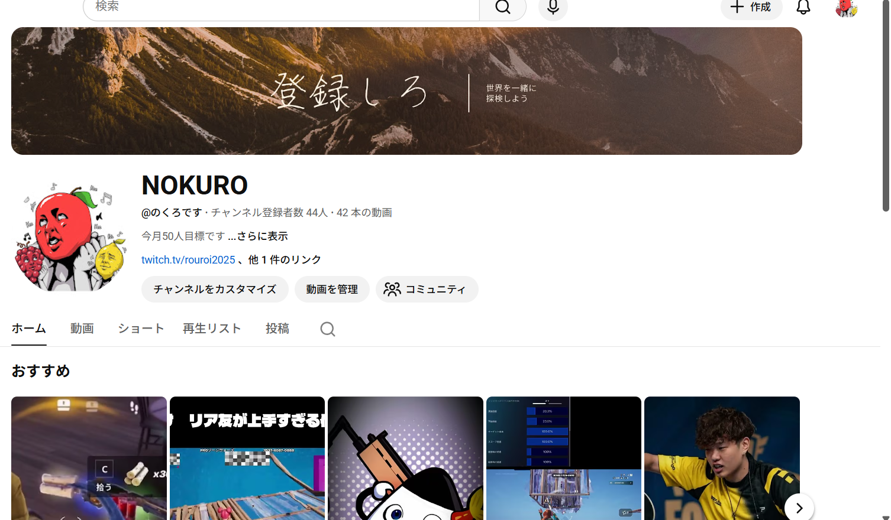
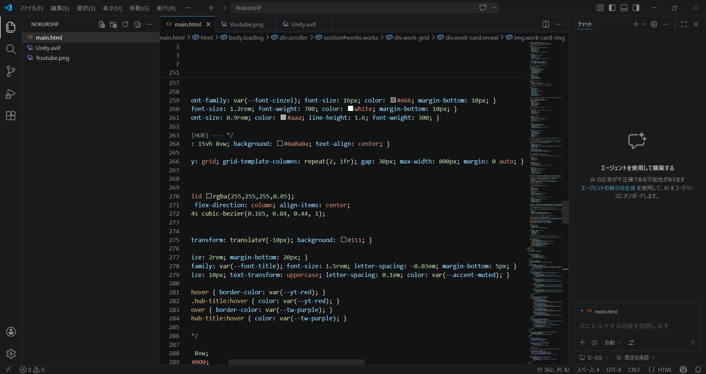
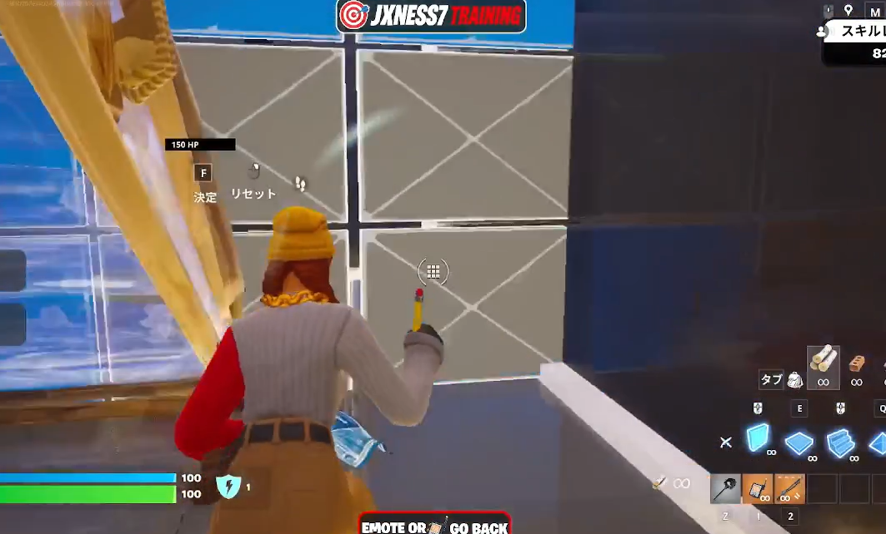

暇人ながら社会を生き抜くアホNOKURO。
Game Dev. / Video Edit. / Streaming. この3つの柱を軸に、技術と感性が交差する新しいエンターテインメントの形を追求しています。引きこもりの部屋を中心として世界中へデジタルな遊び心を届けます。
Showcase

Game Development / Roblox
Create Game

Video Editing / After Effects
Edit Videos

YouTube Content
Make Pages

Game Dev / Unity
Play/Streem Games
History
2023
Start
興味本位からhtml、Javascriptに触れる
2025/first half
CreatedGames
UnityC#を用いたUnityでのゲーム制作を開始。ひらーゲームをsteamにて公開
2025/second half
Start Youtube
Youtubeを始める。ゲーム制作も波に乗る
2026
The New Era
本サイトを開設。新たなゲーム開発プロジェクト「ENEMY」が進行中。